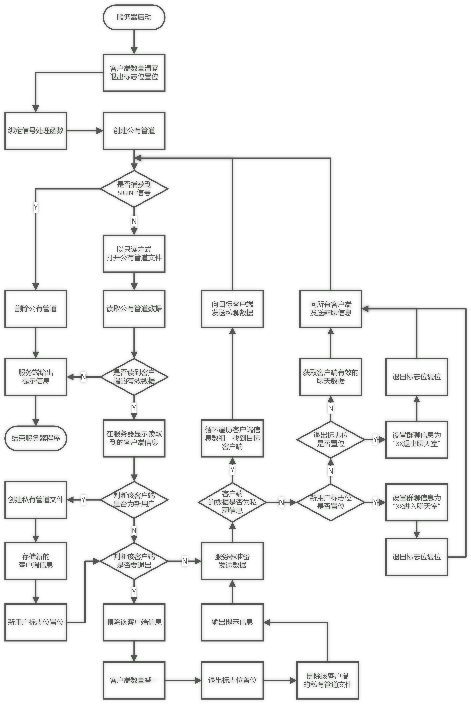
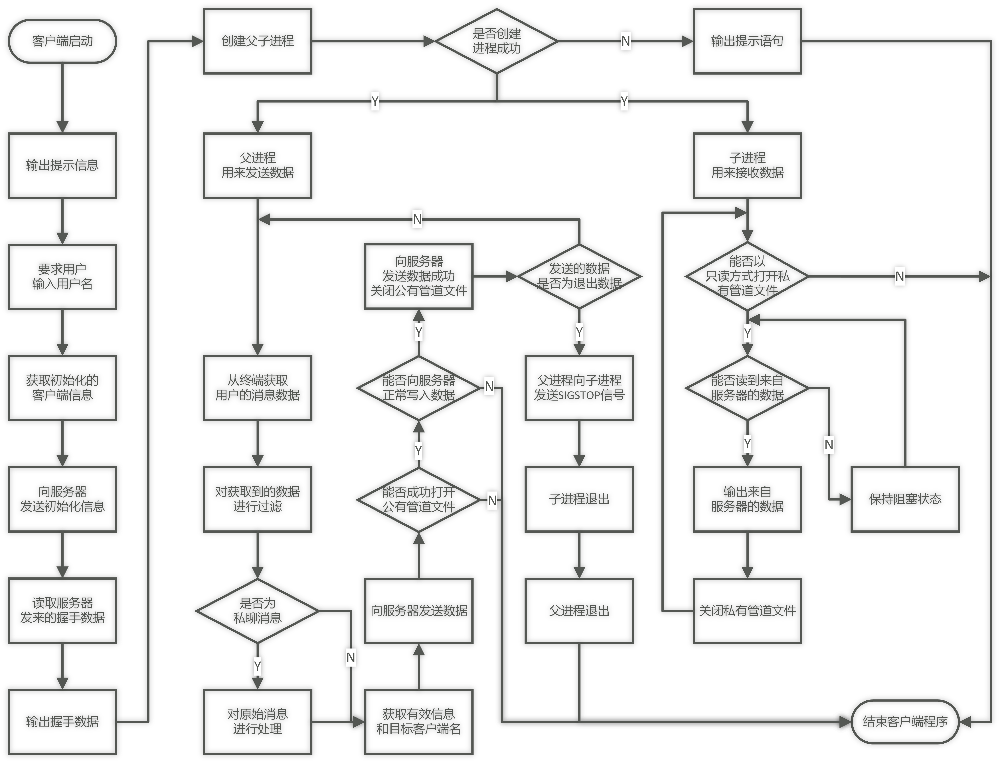

程序流程分析
本项目根据命名管道的客户端服务器模型，实现了多客户端的聊天室功能。具体的程序流程如下：
对于服务器程序
- 服务器程序应该首先被执行，以便客户端的随时加入
- 执行服务器程序后，服务器会首先绑定信号处理函数，用来处理服务器自身的退出
- 服务器创建公有管道文件，并以只读方式打开该文件
- 服务器读取公有管道里的数据，等待客户端的接入
- 当服务器读取到客户端的信息后，会首先判断该客户端是否为新来的客户端，以及它是否为将要退出的客户端。
- 对于新来的客户端，需要保存它的信息至相应的数组中
- 对于将要退出的客户端，删除它的信息
- 发送数据之前，要判断是否为私聊或是群聊，并作相应的数据处理
- 向客户端发送应答消息，也就是将处理后的客户端数据发送出去

对于客户端程序
- 执行客户端程序后，需要首先输入用户名
- 将本客户端的信息发送至服务器，作为握手消息。以便让服务器记录本客户端的数据，并为本客户端创建私有管道。
- 创建父子进程，父进程用来向服务器发送数据，子进程用来从服务器接收数据
- 父进程在接收到用户的数据后，需要首先对数据进行过滤，判断该数据是否为私聊或者群聊
- 循环执行父子进程
